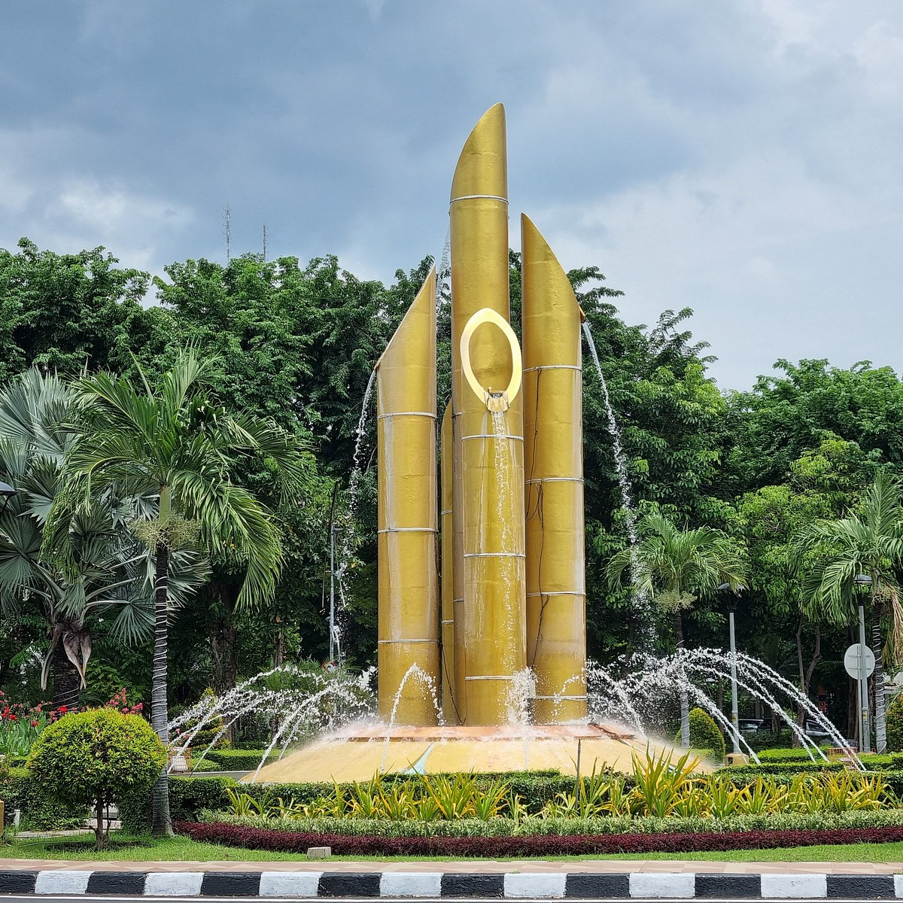
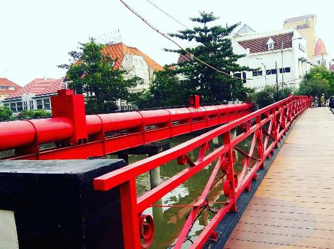

JELAJAH SURABAYA
Tempat
Bersejarah.
Kenali tempat-tempat bersejarah yang menjadi bagian dari perjalanan dan identitas Kota Surabaya.
PILIH TEMPAT
Mau menjelajahi tempat mana?

01
Tugu Pahlawan
Mengenal salah satu ikon sejarah perjuangan Kota Surabaya.

02
Bambu Runcing
Mengenal simbol perjuangan masyarakat Surabaya.

03
Jembatan Merah
Saksi sejarah pertempuran 10 November 1945
04
Masjid Ampel
Pusat penyebaran Islam di Surabaya